Control Valve Body Accumulator Assembly Assemble
Control Valve Body Accumulator Assembly Assemble
Tools Required
* J 36850 Transjel Lubricant
* J 39068 Valve Body Guide Pins
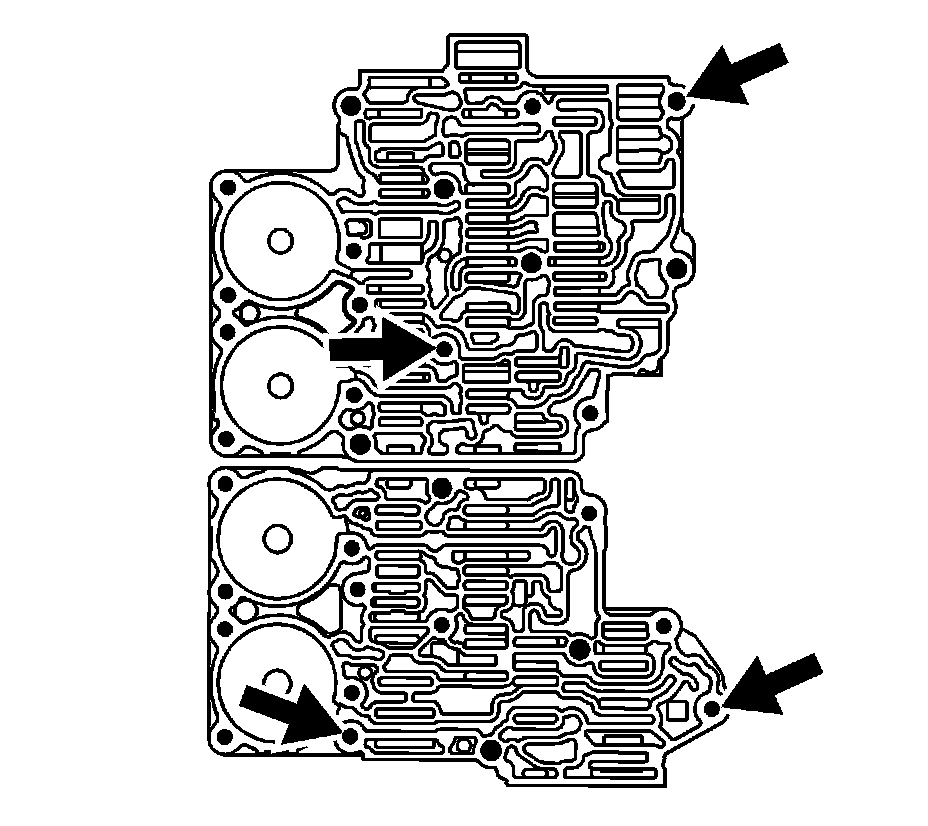
1. Install J 39068 onto the front and rear control valve bodies.
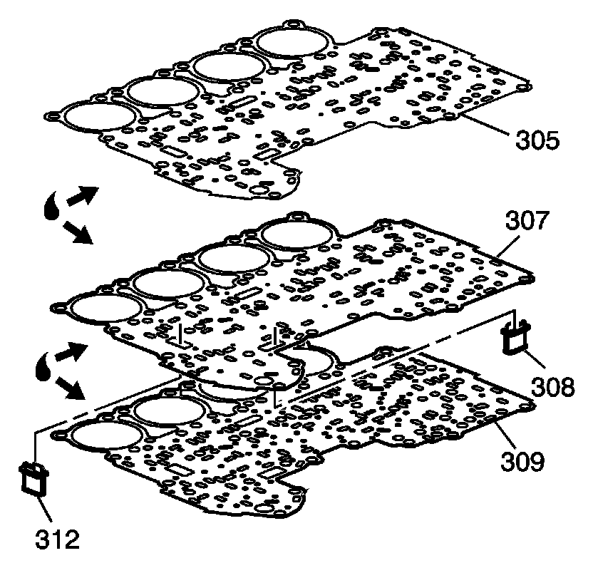
Important: Ensure the coating of transmission fluid is covering the area where the guide pins are installed.
2. Using a light coat of transmission fluid on both sides of the spacer plate (307), install NEW gaskets (305, 309) onto the spacer plate.
3. Install the NEW solenoid valve filter assemblies (308, 312) onto the control valve body spacer plate (307).
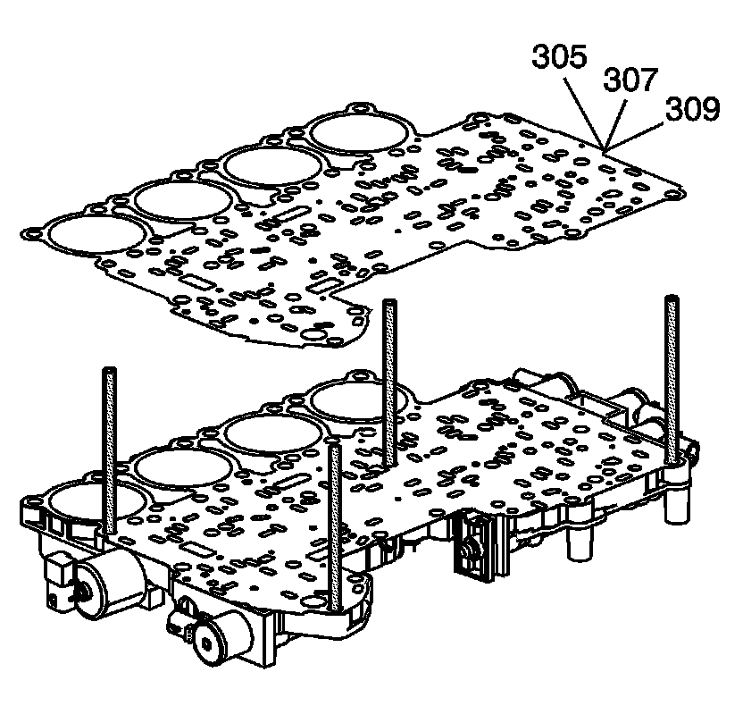
4. Install the control valve body spacer plate (307) and gaskets (305, 309) as an assembly onto the valve bodies.
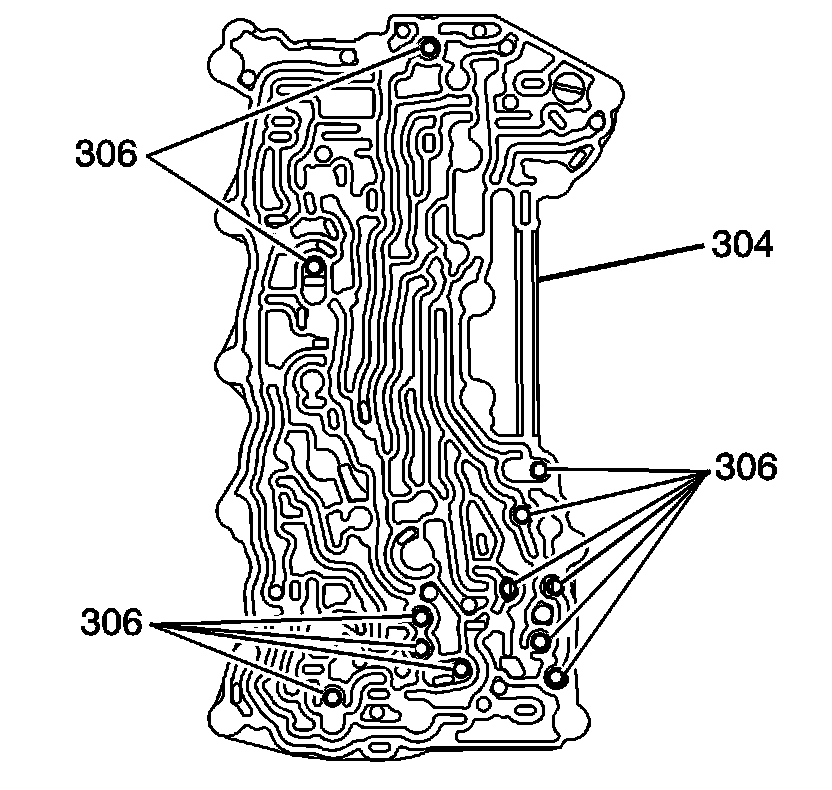
Important: Do not use an excessive amount of J 36850 to retain the checkballs.
5. Use J 36850 to install the 12 checkballs (306) onto the channel plate (304). Refer to Ball Check Valve Locations (Ball Check Valve Locations) .
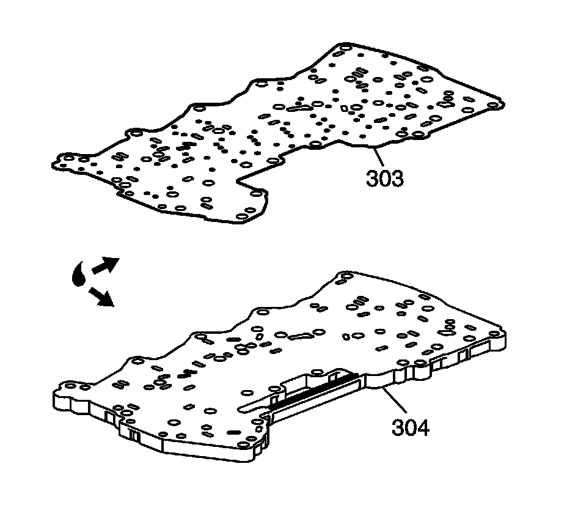
6. Using a light coating of transmission fluid, install a NEW gasket (303) onto the channel plate (304).
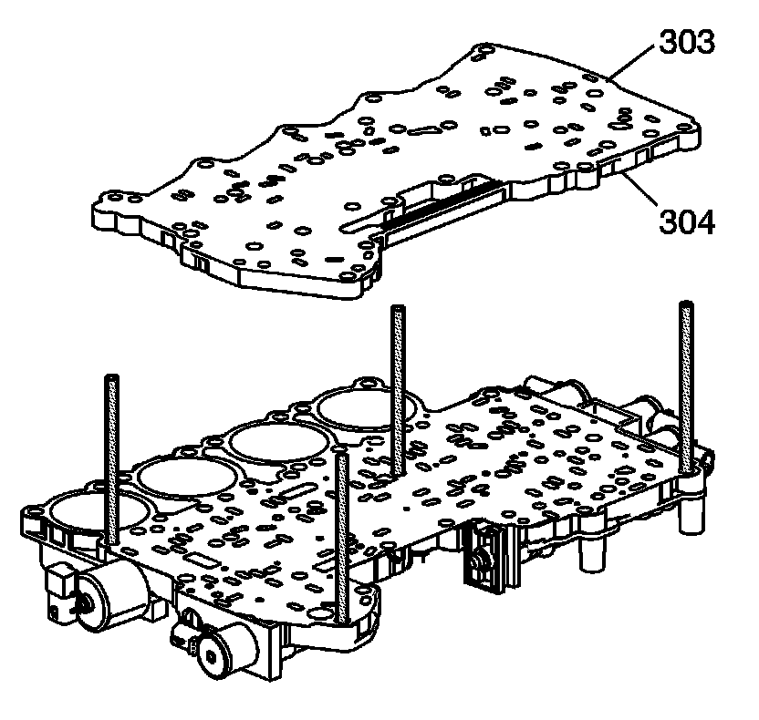
Important: The manual valve should not turn while aligning channel plate.
7. Install the control valve body channel plate (304) and gasket (303) as an assembly.
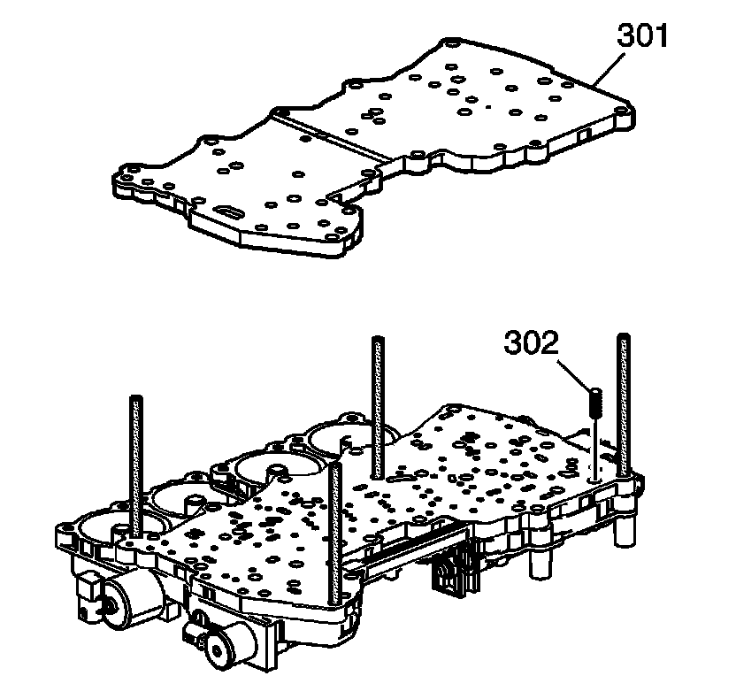
Notice: Use care not to damage the TCC check ball and spring. The spring must be centered in its hole to avoid hanging up on the spacer plate.
8. Use J 36850 to install the control valve channel plate check ball spring (302) onto the channel plate (304).
9. Install the control valve channel plate (301) onto the channel plate gasket (303).

Notice: Refer to Fastener Notice .
10. Install the control valve body bolts (300) into the valve body.
Tighten the control valve body bolts (300) to 11 N.m (8 lb ft).
11. Remove the J 39068 from the valve body (47).
12. Install the direct clutch accumulator piston fluid seal rings (314, 316) onto the direct clutch accumulator piston (315).
13. Install the direct clutch accumulator piston (315) into the direct clutch accumulator housing (317).

14. Install the overdrive clutch accumulator piston fluid seal rings (320, 322) onto the overdrive clutch accumulator piston (321).
15. Install the overdrive accumulator piston (321) into the overdrive clutch accumulator housing (323).
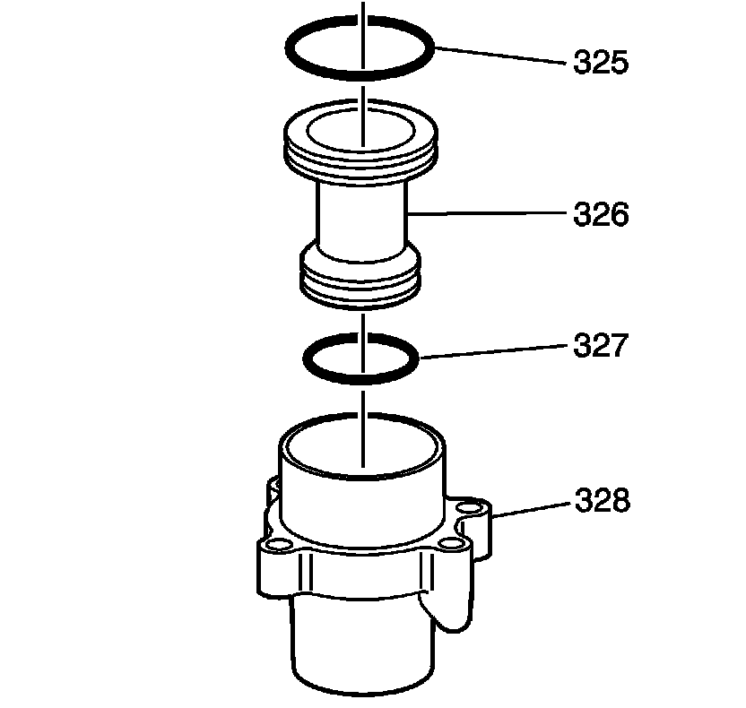
16. Install the intermediate clutch accumulator fluid seal rings (325, 327) onto the intermediate clutch accumulator piston (326).
17. Install the intermediate clutch accumulator piston (326) into the intermediate clutch accumulator housing (328).
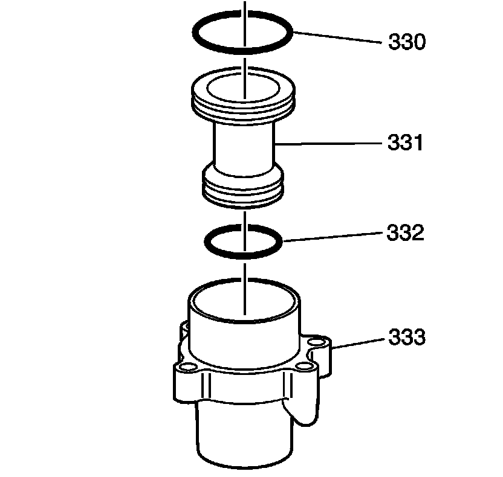
18. Install the 2nd clutch accumulator piston fluid seal rings (330, 332) onto the 2nd clutch accumulator piston (331).
19. Install the 2nd clutch accumulator piston (331) into the 2nd clutch accumulator housing (333).
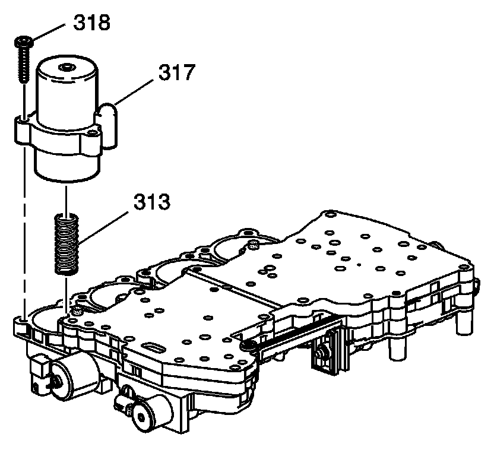
Important: Reassemble the accumulators in the position they were before disassembly. Refer to Control Valve Body Accumulator Assembly Disassemble (Overhaul) .
20. Install the direct clutch accumulator spring (313).
21. Install the direct clutch accumulator housing (317) onto the valve body.
22. Install the direct clutch accumulator housing bolts (318) into the valve body.
Tighten the accumulator housing bolts (318) to 11 N.m (8 lb ft).
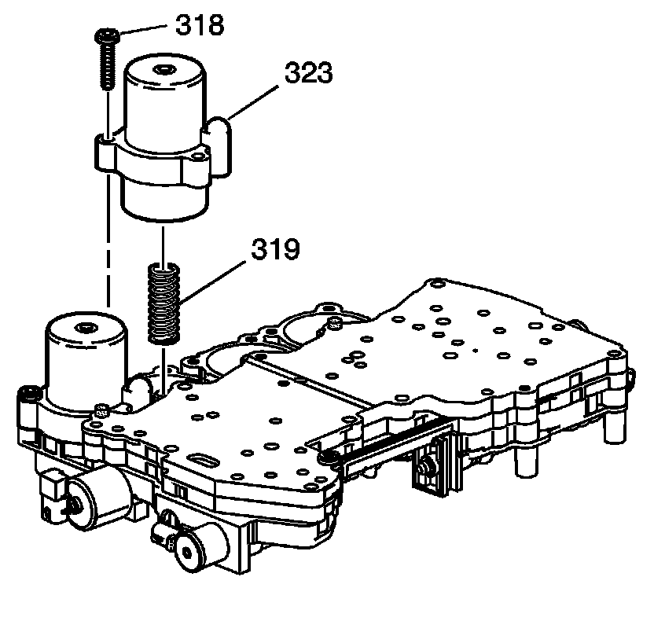
23. Install the overdrive clutch accumulator spring (319).
24. Install the overdrive clutch accumulator housing (323) onto the valve body.
25. Install the overdrive clutch accumulator housing bolts (318) into the valve body.
Tighten the accumulator housing bolts (318) to 11 N.m (8 lb ft).
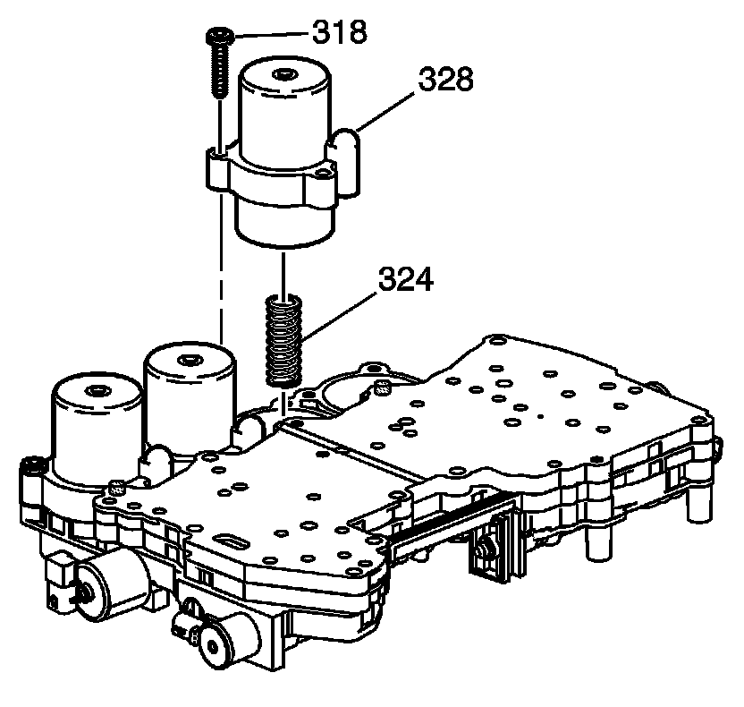
26. Install the intermediate clutch accumulator spring (324).
27. Install the intermediate clutch accumulator housing (328) onto the valve body.
28. Install the intermediate clutch accumulator housing bolts (318) into the valve body.
Tighten the accumulator housing bolts (318) to 11 N.m (8 lb ft).
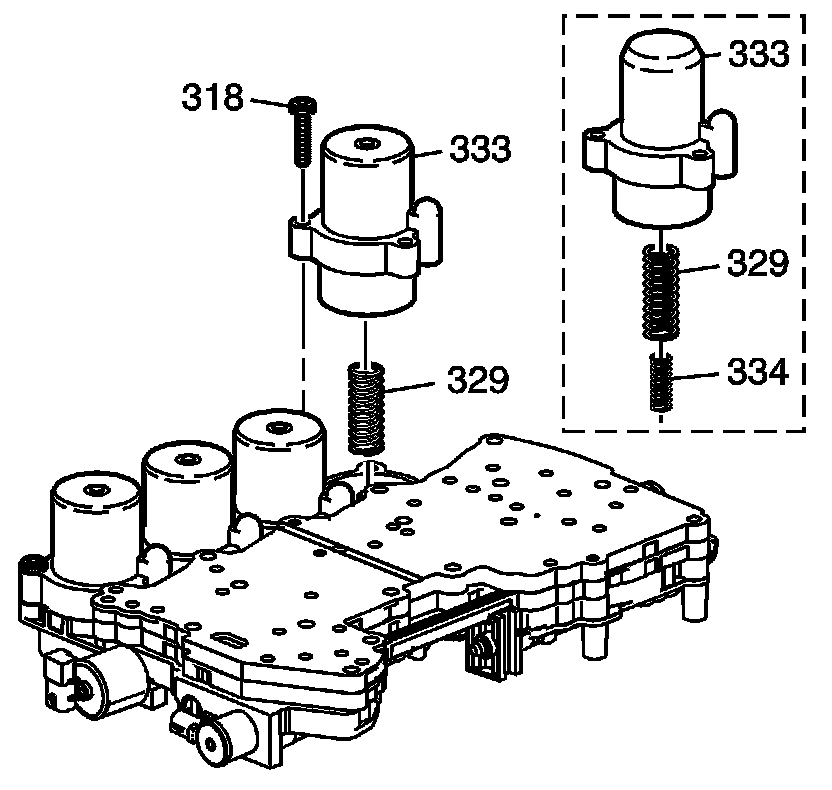
Important: The 5L50-E has a unique stackup on the 2nd clutch accumulator housing.
29. Install the 2nd clutch accumulator spring (329).
30. Install the 2nd clutch accumulator housing (333) onto the valve body.
31. Install the 2nd clutch accumulator housing bolts (318) into the valve body.
Tighten the accumulator housing bolts (318) to 11 N.m (8 lb ft).